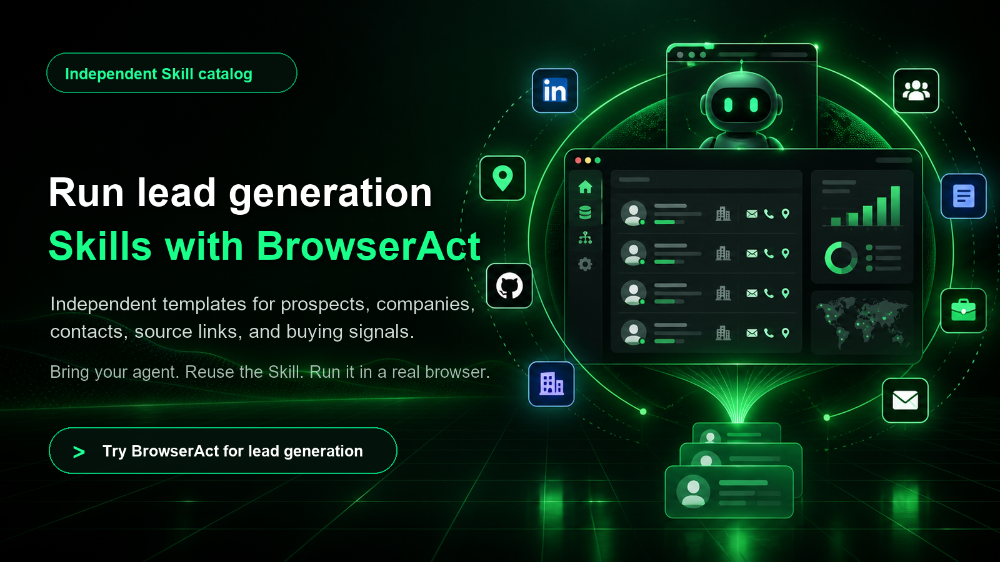

Collect prospect signals from real websites.
Reusable Skill templates for LinkedIn research, Google Maps leads, company pages, contact discovery, enrichment, directories, hiring signals, and buyer-intent monitoring.

From scattered pages to prospect research.
Lead generation often starts across maps, social pages, directories, search results, company sites, and hiring pages. These Skills make those repeated browser tasks easier to reuse.
Find companies, people, local businesses, creators, founders, recruiters, and relevant accounts.
Collect websites, emails, phone numbers, social links, decision-maker clues, and source URLs.
Inspect company pages, directories, funding databases, job boards, and public business profiles.
Monitor hiring, ads, product launches, social posts, intent keywords, and other outreach triggers.
Coverage examples.
LinkedIn, Google Maps, Google Search, company websites, Facebook, Instagram, TikTok, Reddit, YouTube, GitHub, Crunchbase-style databases, directories, job boards, and enrichment workflows.
How to start.
Define the target
Start with a niche, region, platform, company type, or buying-signal trigger.
Run the Skill
Let your agent navigate pages, scroll results, open profiles, and capture structured fields.
Qualify before outreach
Use source links and evidence fields to keep prospect research reviewable.